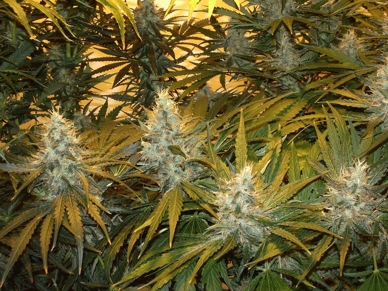
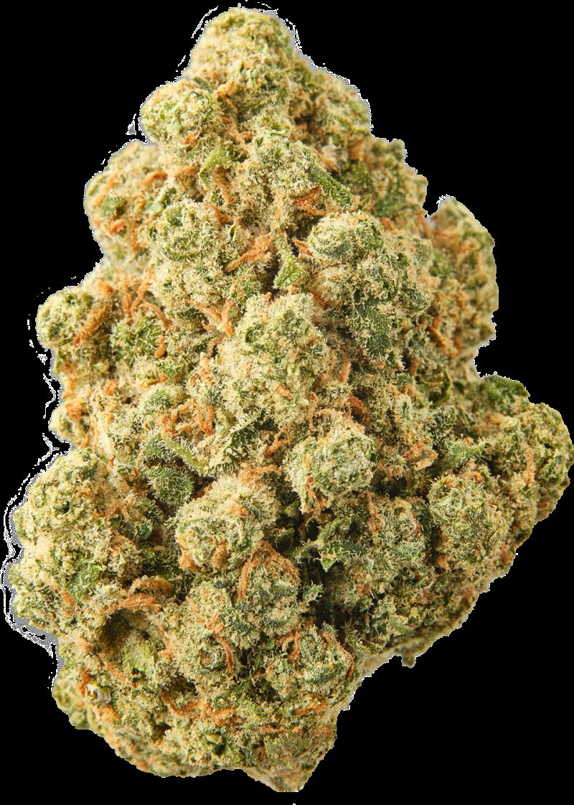
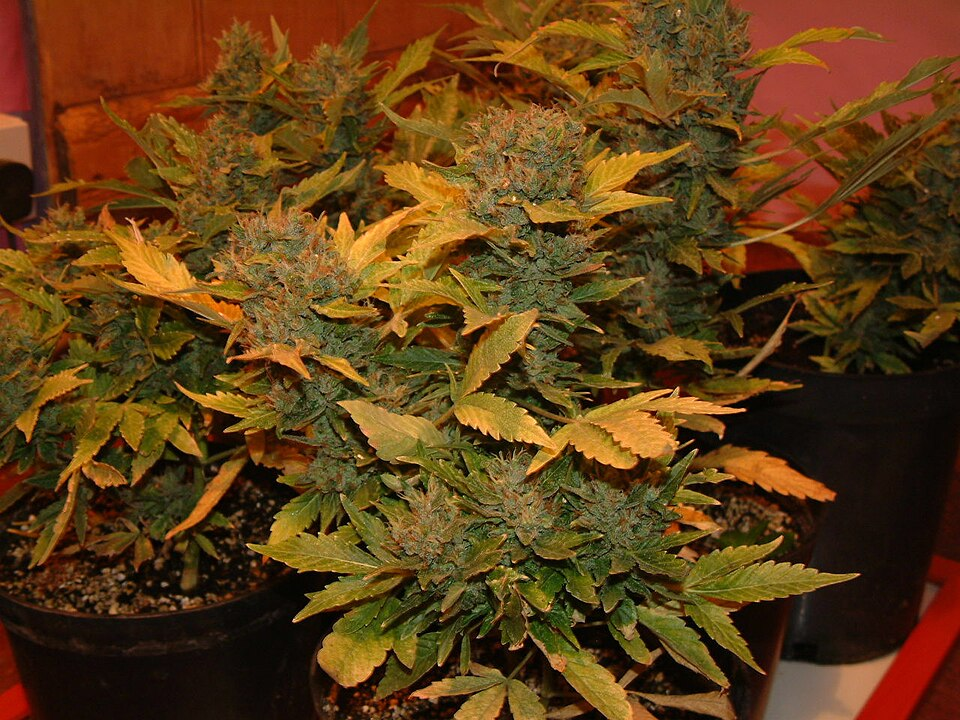
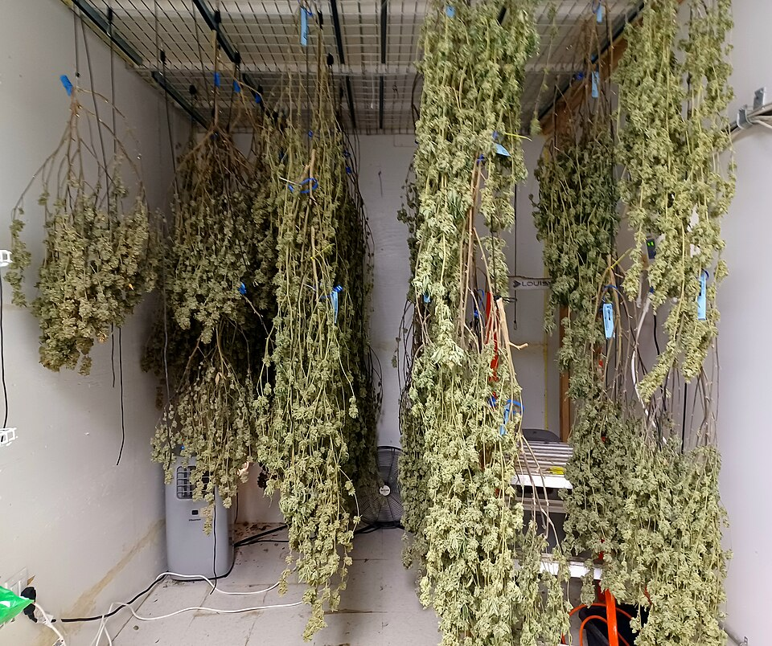
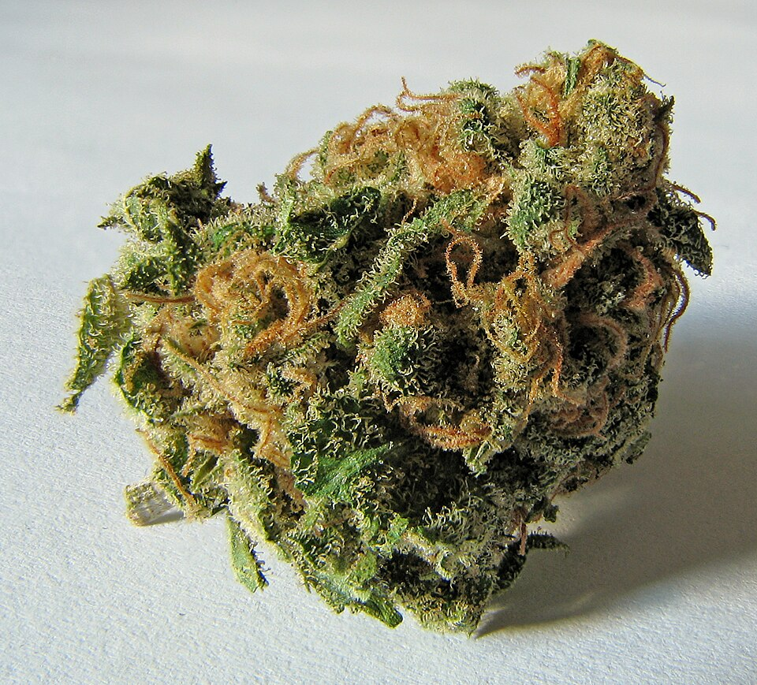

Sprayed / PGR weed
 Chemical burn:
Chemical burn:
 Clean:
Clean:

GanjaGuardian
This site contains cannabis strain information and harm reduction guides. It is for adults of legal age only.
By entering, you confirm you are old enough to view cannabis content where you live.
No account and no tracking. Your answer stays in this browser.
Cannabis strain project
Browse 12,000+ classic and modern cultivars, with effects, flavours, family trees and practical grow notes for every profile.



Northern Lights, Jack Herer & Purple Haze · Photo credits
The Owner's Top Picks
Start here
Full library
Plant to flower
A quick look at how cannabis grows, from the first leaves to the jar.
Growth stage photos are openly licensed; full attribution is on the photo credits page.
What you get
Search by name, vibe, flavour or terpene, then sort by THC or CBD when you want a quick shortlist.
Effects and flavours come from common strain reports. No fake review counts, lab badges or invented scores.
Every profile includes terpenes, a family tree and practical grow notes. Licensed photography appears where available.
GanjaGuardian is a hand built strain guide for people who want the look, smell and story behind a cultivar without the hype. Potency changes from batch to batch, so treat the numbers as a rough guide rather than a guarantee.
Cannabis laws vary by region. This site is intended for adults of legal age only.
Some remaining photos are reference images where a licensed strain specific photo is not available. Profiles without one show a clean no verified image panel.
Privacy: no accounts, cookies, analytics, third party fonts or remote image requests. Your light or dark theme choice stays in this browser. Photos are openly licensed and individually credited on the photo credits page.
Good bud guide
Chemical burn:
Clean:
 Cut:
Cut:

Uncut:Sprayed is not one thing. PGRs, pesticides, synthetic cannabinoids, sugar, sand, glass, talc or rubbery additives can all turn up in flower. Tight, clumped, rock hard buds are a warning sign, not proof.
The left photo is fertilizer burn, not a PGR sample. See the full sprayed guide.
 Trichomes
Trichomes
 Pests
Pests
 Trim
Trim

Cure
Structuresource: Fertilizer burn (Fenrisulfir, CC BY-SA 3.0), Dry cannabis plant (Fireworks1165, public domain), Spider mite damage (Rikva, public domain). full credits.